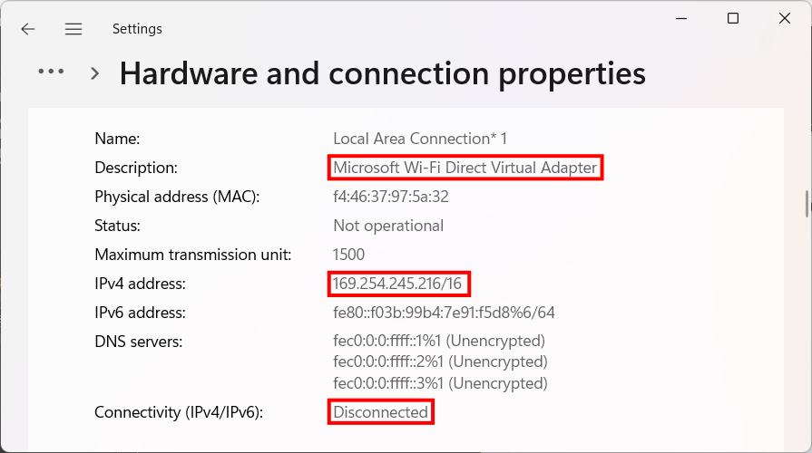
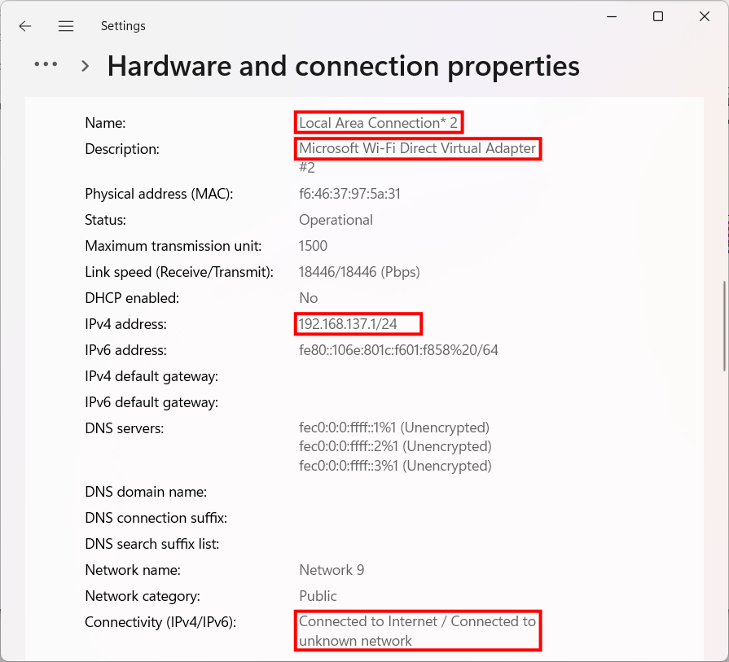

If your lighting network does not have a wireless access point, you can use the hotspot feature in your operating system
to create a wireless network for your mobile device.
Windows
Note
Because of limitations in Windows, this feature is only available if your computer has an internet connection
available.
A list of all network adapters on your system will appear. Find the one where Description starts with MicrosoftWi-FiDirectVirtualAdapter, has an IPv4 address that does not start with 169.254, and does not
show “Connectivity (IPv4/IPv6)” as Disconnected. This is the hotspot’s network interface. Make note of the
“Name” field; you’ll need it in a moment. See the figures below for examples:

Description is correct, but IP Address and Connectivity are wrong.

All items are correct. Note the connection name.
Open Mobile sACN. Be sure to set the correct network adapters! The “Web UI Interface” must be set to the connection
name noted before. The “sACN Interface” is the network adapter connected to your lighting network.